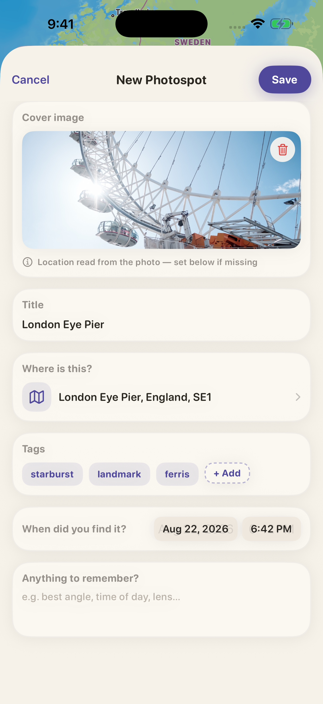
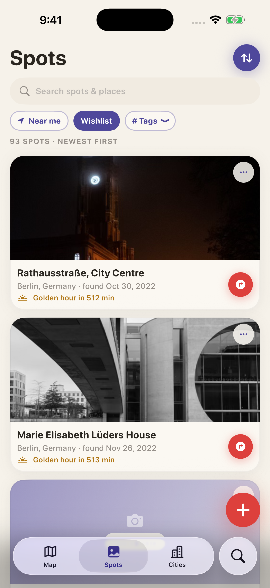
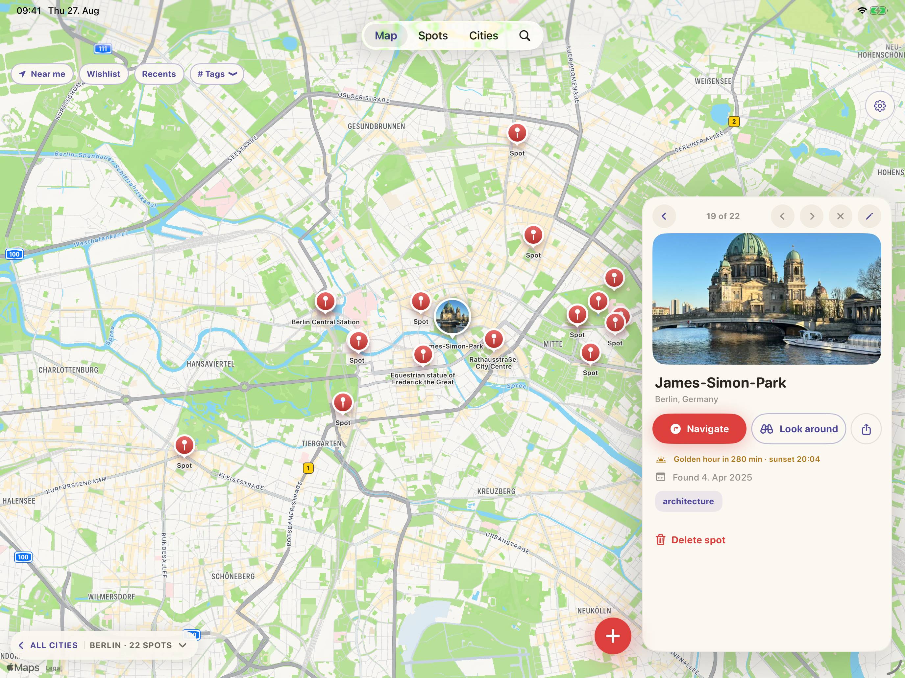
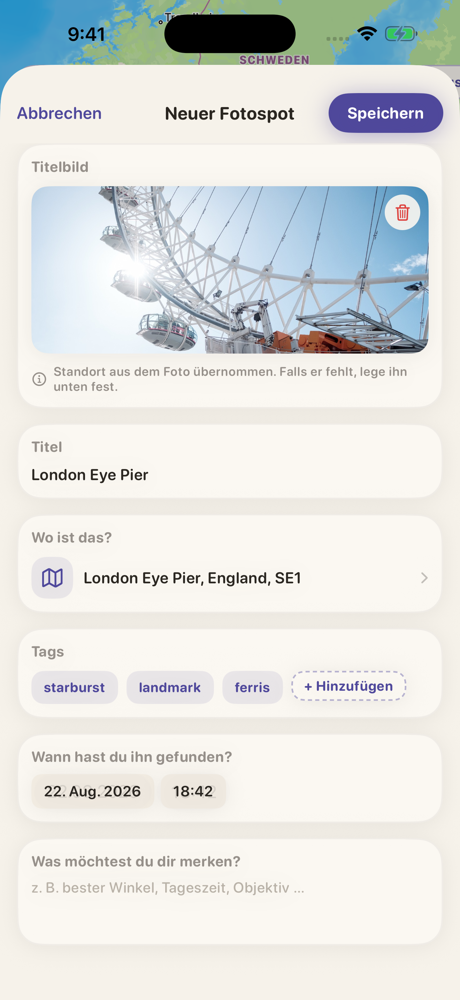
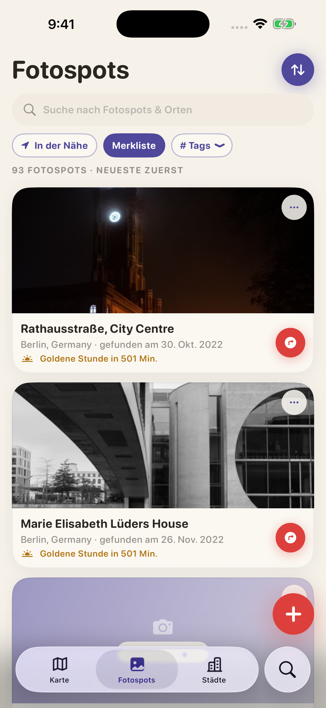
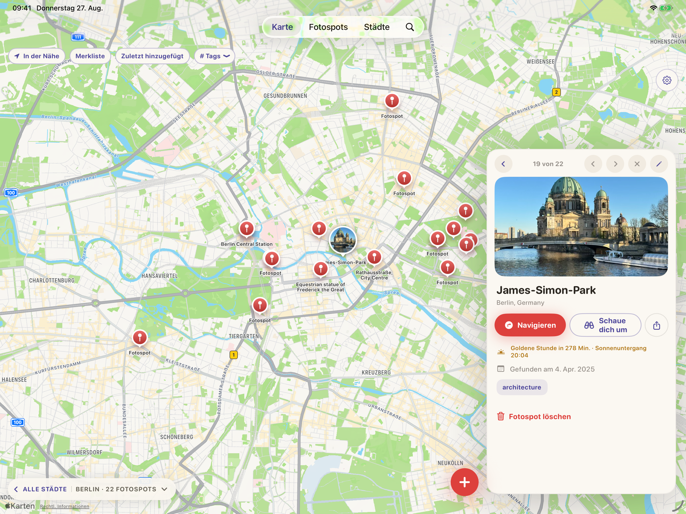

BY MUGO WORKS
BY MUGO WORKS
Keep a place
Keeping a place takes about as long as noticing it. Pick the photo you just took and the spot lands where you were standing, at the hour you were there. Write down why you kept it: the light, the angle, the walk in.
Plan the next one
Half of a fieldbook is the places you have not been to yet. Put those on the map as a wishlist, look around the street before you drive out there, and when a plan falls apart, pull up whatever is near you instead.
Hand one over
Every so often a place is worth handing to someone. It goes to that one person and stays between you, a private exchange that keeps your attention on the place itself.


The spot docks. The map stays open.
On iPad the map fills the screen, and the spot you tap docks along the edge, so the map stays open beside it.

BY MUGO WORKS
Einen Ort behalten
Einen Ort zu behalten dauert ungefähr so lange, wie ihn zu bemerken. Du wählst das Foto, das du gerade gemacht hast, und der Fotospot landet da, wo du gestanden hast, zu der Stunde, zu der du da warst.
Den nächsten vormerken
Die Hälfte eines Feldbuchs sind die Orte, an denen du noch nicht warst. Setz sie als Merkliste auf die Karte, schau dich in der Straße um, bevor du hinfährst, und wenn ein Plan platzt, hol dir, was gerade in der Nähe liegt.
Einen weitergeben
Manchmal willst du jemandem einen Ort in die Hand geben. Er geht an genau diese eine Person und bleibt zwischen euch: ein leiser Austausch, der deine Aufmerksamkeit beim Ort belässt.


Der Fotospot dockt an. Die Karte bleibt offen.
Auf dem iPad läuft die Karte über den ganzen Bildschirm, und der Fotospot, den du antippst, dockt an den Rand, sodass die Karte daneben offen bleibt.
